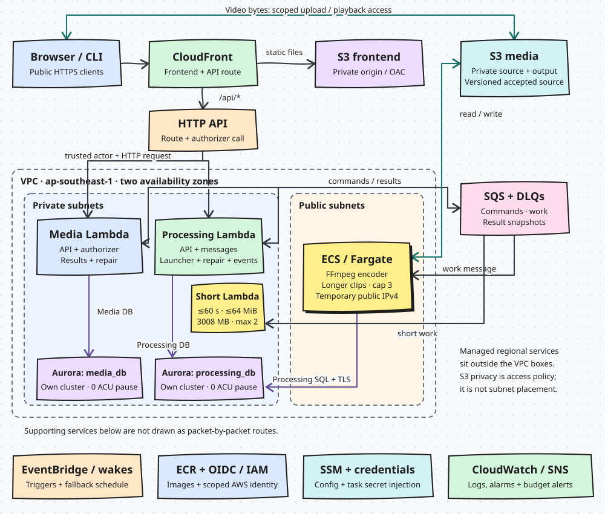

Complete study edition
FlickPond, from basics to details.
Every chapter in one place. Printing includes all depth levels, diagram notes and question answers.
Chapter 01
What did we actually build?
Meet the users, learn the technology stack, and separate inherited capability from the work done in GC2.
We built FlickPond into a reusable cloud video-processing platform. An owner uploads a video, conversion happens in the background, and the owner can follow its status and play the result. The browser and Publisher CLI use the same public contract. GC2 focused on separating responsibilities, running the system on AWS, proving reuse, and making delivery and recovery repeatable.
Level 1 / Basics
Start with a person, not an AWS diagram
Imagine Maya has a folder of training clips. She wants usable videos, a clear result for every file, and a way to retry a failed conversion without uploading everything again. She should not have to know how to run FFmpeg, manage queues, or create storage permissions. Arun has the same need for one video through a browser.
FlickPond separates the quick interaction from the slow work. The application accepts an upload and records a job. A background worker converts it. The client asks for status until the result is ready. Acceptance means the platform has durably accepted the work; it does not mean the encode has finished.
What the owner experiences
The owner’s path through the platform. MP4 is the main output; HLS is added when the source allows it.
Read all diagram notes
- Upload — The client reserves a destination, uploads bytes to S3 and finalizes. A successful S3 upload alone is not yet an accepted job.
- Track — The request returns before encoding finishes. The owner can check status while background work continues.
- Play — The owner obtains fresh, temporary playback access after the output is ready.
- Recover — A retry reuses the accepted source and creates a new processing attempt. It does not require uploading the original video again.
What problem does FlickPond solve in one sentence?
Why does the upload response not wait for conversion?
Check the source
Original personas and business scope · Current use-case catalogue
Level 1 / Basics
The technology stack, layer by layer
From what users touch to what AWS manages
A responsibility map, not Docker build layers. Only the Python services run inside the three images; S3, SQS and Aurora are external managed services, and delivery tooling builds and deploys the rest.
Read all diagram notes
- Clients — frontend/ is plain HTML, CSS and app.js loaded directly by the browser, with vendored hls.js and Plyr for playback; there is no production npm build. Node, Vitest and jsdom only run its tests. publisher/ is a Python command-line client of the public HTTPS API.
- Python 3.12 services — media/ and processing/ expose FastAPI routes and validate requests with Pydantic. SQLAlchemy maps each service’s own tables and Alembic migrates each owner’s database separately. contracts/ defines the shared message values; media_engine/ wraps FFprobe and FFmpeg for the worker.
- Three container images — deploy/v1/media, processing and worker Dockerfiles all start from python:3.12-slim. The Media and Processing images run the AWS Lambda runtime client. Only the worker image installs FFmpeg/FFprobe; it runs processing.v1_worker.
- AWS compute — The Media and Processing images run as Lambda functions behind API Gateway, and CloudFront serves the static frontend. A launcher Lambda starts finite Fargate worker tasks, capped at three, when work is waiting.
- Managed services — These run outside every container. S3 holds source and output video, three SQS queues carry work metadata, and one Aurora PostgreSQL cluster hosts the separate Media and Processing databases.
- Delivery tooling — Not part of any request. GitHub Actions runs CI and CD. scripts/aws/v1/definitions.py renders the CloudFormation template that creates the AWS resources above; Terraform and Kubernetes are not used.
Python expresses the program, FastAPI exposes it as an API, an image packages it with its libraries, Lambda or Fargate runs it, and S3, SQS and PostgreSQL keep its files, messages and state. Delivery tooling sits outside the request path.
Is the frontend a React or Node server application?
Level 1 / Basics
Four personas, two product clients
| Persona | Need | What to demonstrate |
|---|---|---|
| Maya · course coordinator | Submit a folder, see every outcome, retry failures. | Publisher batch output, then status and playback. |
| Arun · independent trainer | Upload and check one owned video. | Browser upload, status, MP4 playback and owner isolation. |
| Jules · application developer | Reuse the platform without importing service internals. | OpenAPI and the Publisher client using public HTTPS APIs. |
| Sam · platform operator | Change worker capacity and release safely. | Recorded capacity results, delivery identity and earlier restore evidence. |
How many applications demonstrate reuse?
Check the source
Persona definitions and explicit boundaries · Publisher behavior and contract
Level 2 / Design
Why call this a platform?
A single website can process videos. A reusable platform also exposes that capability through a stable contract so another application can use it. FlickPond’s core capability is owner-scoped media intake, processing and output access. The browser and Publisher both consume that capability through HTTP. They do not need database passwords, queue credentials or copies of the encoding implementation.
In platform language, the processing capability is the seed. Content owners produce input videos. Applications consume the APIs and processed results. The second, independently built client demonstrates that reuse.
| Use case | Promise | Primary stakeholder |
|---|---|---|
| UC-1 | Authenticate and accept a verified upload. | Maya / Arun |
| UC-2 | Process accepted work asynchronously. | Maya / Arun |
| UC-3 | Read status and obtain owner-authorized playback. | Maya / Arun / Jules |
| UC-4 | Retry with the stored source. | Maya / Arun / Jules |
| UC-5 | Publish a batch through the independent CLI. | Maya / Jules |
| UC-6 | Vary Processing capacity independently. | Sam |
| UC-7 | Release Processing and demonstrate restore behavior. | Sam |
What concrete evidence supports the platform claim?
Check the source
UC-1 through UC-7 · Published Media API · Client contract and import-boundary tests
Level 2 / Design
What came from GC1, and what GC2 changed
From the inherited app to the current release
Top to bottom in time. Each stage keeps its own receipts; later documentation commits are not new runtime images.
Read all diagram notes
- 1 · Inherited Project 1 — Accounts, uploads, job and retry concepts, nginx, MP4 and best-effort HLS already existed. GC2 reshaped these capabilities rather than starting video encoding from zero.
- 2 · GC2 proposal — The proposal used a synchronous SubmitJob, Redis/RQ and a service token. The implementation moved to a SQL outbox/inbox, SQS and a trusted Gateway actor.
- 3 · AWS V1 — Separately owned data and recorded cloud experiments. The accepted V1 tag stays immutable, and each experiment keeps its own date and workload.
- 4 · Persistent V2-live — Bounded worker launch, an idle-pause design and automated delivery.
- 5 · 20 October release — Shared credential policy, fewer dependencies, better integration discovery and failure tests, safe error and cache policy, and exact-source delivery gates. Later Main documentation is 8152ede.
The course work is therefore a story of architecture and operational maturity. We separated data ownership, made asynchronous work durable, demonstrated a second client, moved to managed cloud services, and checked failure behavior. The quality pass removed specific duplication and obsolete configuration while adding tests. Repository-wide physical line count rose with the formatting and test additions.
The effort ledger records an equal planned allocation and suggested specialisms; it is not a per-person timesheet.
Level 3 / Details
Find the real implementation without getting lost
Where each responsibility lives
Two services, two clients, shared libraries, delivery and history. Click a group for its directories.
Read all diagram notes
- Clients — frontend/ is the browser app and publisher/ is the Python CLI. Both use only the public HTTPS API, with ordinary owner accounts.
- Media service — Accounts, asset ownership, upload reservation and verification, the local ProcessingProjection and owner-checked playback.
- Processing service — processing/ owns jobs, attempts, leases, messages, recovery and the finite worker. media_engine/ holds the reusable FFprobe/FFmpeg probing and conversion code.
- Shared libraries — contracts/ defines message shapes, source and actor identity and the Gateway adapter. delivery/ implements the SQL outbox/inbox and SQS transport. runtime_support/ holds small shared runtime policies such as storage credentials. Libraries only, with no database of their own.
- Build and deploy — deploy/v1/ holds the three Dockerfiles. scripts/aws/ and deploy/aws/v1/ render, deploy and release the AWS stack, including the persistent environment despite the v1 folder name. .github/workflows/ runs CI and CD.
- History and evidence — app/ and the inherited test stacks keep Project 1 behavior under regression; they are not on the AWS request path. docs/results/ and docs/release/ hold dated measurements and delivery receipts.
When a document and the code seem to disagree, check the document’s date and operating mode. The README contains older status snapshots, and the proposal describes an earlier plan. Use the engineering handoff for the latest retained delivery facts, then follow its code and test references. A local test using Moto emulates AWS APIs; a real AWS receipt is a different kind of evidence.
Why are Redis and MinIO dependencies still visible if the live system uses SQS and S3?
Chapter 02
How the platform fits together
Follow the current Media and Processing design through its domain boundaries, durable hand-offs, worker path, and the trade-offs that keep the system understandable.
Media owns people, uploads, and playback access. Processing owns jobs and encoding attempts. They coordinate through versioned messages and each keeps its own database. A worker turns a pinned source version into outputs; Media then exposes those outputs only to the owner.
Level 1 / Basics
Start with the work the system promises
Think of Flickpond as a place where an owner submits a video, asks for a transformation, and later watches the result. The visible item is an Asset: a video owned by one account, together with its source identity and edit operations. Its identifier is also the public job identifier, so clients can keep one reference from upload through status and playback.
Processing work has a different life from the Asset. One Asset can have one Processing Job, and that Job can have several numbered Attempts over time. A retry does not overwrite the first attempt; it creates a fresh attempt from the accepted source. This distinction makes it possible to explain which try failed, which one is current, and which output belongs to it.
What owns what
Containment and cardinality, not a request sequence. Media owns the top two rows and Processing the bottom two; IDs cross that line as contract values, not foreign keys.
Read all diagram notes
- Owner account — The account that may upload, read status and play outputs. Every protected read filters by this owner.
- Asset — The user-facing anchor: source identity and edit operations. Its ID is also the public job ID from upload through playback.
- Job — Processing’s lifecycle for the requested work. A unique asset_id prevents a second Job for the same Asset.
- Attempts 1, 2, 3… — Each try has its own number, identity, lease and output path. A valid retry of a failed Job adds the next Attempt; earlier Attempts keep their history.
Why are Job and Attempt separate?
Level 1 / Basics
From client bytes to an accepted command
A browser or Publisher client first asks Media for an upload reservation. It sends a request key plus filename, declared content type, byte length, and SHA-256. Media validates the request and creates an owner-scoped reservation with a server-chosen S3 key. It returns a short-lived presigned POST. The client sends the bytes directly to S3, so a large video body does not travel through API Gateway or a Lambda function.
The client then calls finalize. Media verifies the uploaded object’s actual size, checksum, media type signature, and S3 VersionId. Verification happens outside SQL row locks because streaming bytes can take time. Media then locks the reservation and, in one database transaction, records the exact VersionId, creates the Asset, and stages a submit message. The accepted source is therefore not “whatever is currently at this key”; it is the immutable version Media checked.
The intake promise
Four steps show the client-to-platform boundary. A missing or changed upload is rejected before it becomes accepted work.
Read all diagram notes
- Reserve — Media fixes the key and expected file facts, then returns a short-lived upload grant.
- Upload — The client transfers bytes to object storage without routing the video through the API.
- Verify — Media checks stored bytes and records the S3 VersionId it actually verified.
- Accept — One transaction adopts the Asset and records the command that will request processing.
This protocol has a cost: the client hashes the file before upload, and the system needs a versioned bucket plus cleanup for abandoned or late writes. That complexity buys a strong promise: the worker can later read the same bytes that Media accepted. A replay of an upload grant may create another object version, but the accepted source remains pinned to its original VersionId.
Idempotency makes uncertainty manageable. If a client repeats a reservation or finalization after a lost response, the request key lets Media return the already accepted item. Reusing the same key with different request data produces a conflict. This is especially important for Publisher: a transport timeout does not prove that the server failed to accept the file.
What if S3 has no object when finalize runs?
Level 2 / Design
Two owners, with a deliberate seam
The design has two bounded contexts, Media Management and Processing. Each has its own vocabulary, rules, database role and code owner; the diagram below lists what each one decides.
They use separate PostgreSQL databases and roles (media_db and processing_db). Each service queries only its own tables and migration history. IDs crossing the seam are values in a contract, not foreign keys into the other service.
Media keeps a ProcessingProjection, a local read model of the latest accepted Processing state. A browser can ask Media for an owned Asset and its status in one domain. Media does not open a Processing database connection to answer that question. When a result arrives, Media validates it and updates its copy. Before the first result, Media can show accepted, a Media-side state that Processing does not emit.
Two owners and the seam between them
Each owner migrates and queries only its own database; there are no cross-database joins or shared ORM models. Both databases live on one Aurora cluster, which remains a shared capacity and failure boundary.
Read all diagram notes
- Media — Owns accounts, ownership checks, upload reservations, pinned sources, public reads, playback signing, deletion and cleanup. Its ProcessingProjection is a local copy of the latest accepted Processing state, so status reads never touch processing_db.
- The seam — Versioned envelopes describe actors, sources, commands and results. contracts/ is a library both sides import; it runs nothing and owns no data. Messages travel over SQS lanes and land in each owner’s inbox.
- Processing — Owns jobs, attempts, leases, retries, cancellation, output records and encoder claims. It decides which Attempt is current and whether a worker may claim or finish it.
Identity and playback stay with Media because those rules need the owner and Asset together. The user row, owner filter, source pin, and playback signer live in Media’s database. Splitting identity into a third service would make ordinary ownership and playback decisions depend on extra network calls, without creating a useful independent lifecycle. The architecture chooses two business services, not one service for every noun.
Is the Media authorizer a third service?
Level 2 / Design
Messages carry work across the seam
Media and Processing never call each other synchronously to create a job. Every hand-off is a message: the sender stages it in its own SQL transaction (an outbox row), a publisher sends it to one of three SQS lanes, and the receiver records it in its inbox with the resulting state change.
Why an outbox? A database commit and an SQS send cannot be one atomic operation. If the API changed SQL and then tried to send directly, a crash between the two could leave an accepted Asset with no command. With an outbox, the durable state change and intent-to-send commit together. A separate publisher can retry delivery. A claim token fences the publisher: after network I/O it acknowledges a row only if it still owns the claim.
Delivery is at least once, and Standard SQS can duplicate or reorder messages. The inbox stores a message ID and canonical body hash in the same transaction as the domain update. Repeating the same ID and body becomes a no-op; reusing an ID with different content is a conflict. Repair can reconstruct work from Processing’s SQL state if a queue entry is lost. These safeguards make the system recoverable; they do not make SQS exactly once.
Ordering is guarded at the domain level. Processing serializes submit, retry, and cancel with a per-Asset SubmissionGuard. Result snapshots carry increasing state_version values and attempt identity. Media ignores an older version, rejects conflicting content at the same version, and refuses an output outside the expected job/attempt path. An old worker may still finish a computation, but it cannot take authority from the current attempt.
Three queue lanes, each with one producer
Queues carry notifications and work; each owner’s SQL records what has been committed. Duplicates are expected, so the design aims for safe repetition, not exactly-once delivery.
Read all diagram notes
- processing-commands — Media commits the Asset change and an outbox row together; a publisher sends it later. Processing accepts it into its inbox, serializes it per Asset and creates or changes the Job and Attempt.
- processing-work — Processing stages work through its own outbox. A finite worker claims the Attempt with a lease and records the finish in processing_db. An optional short-encode lane exists as an unmeasured experiment.
- media-results — Each Processing state change stages a result with an increasing state_version. Media validates it and updates its ProcessingProjection. The worker never writes to Media.
- SQL in each owner — Within one database, state and message intent commit atomically. SQS delivery is at least once; the inbox absorbs duplicates and repair re-sends work that SQL says is still queued.
Does inbox deduplication mean exactly-once processing?
Level 2 / Design
From a worker lease to owner playback
The worker does not trust a queue message enough to start encoding. It asks Processing to claim the named Job and Attempt. Processing checks the source descriptor, owner and Asset identity, current-attempt status, submission guard, and finite task binding. If eligible, it creates a lease token and timestamps using the database clock. Heartbeats and finish operations must present that same live token before the deadline.
The worker downloads the pinned source, probes it, validates requested edits, and runs FFmpeg. Outputs live beneath jobs/{job_id}/attempts/{attempt_id}/. A successful attempt must report exactly one primary output; HLS is optional. Processing commits terminal state and result before the SQS work message is deleted. If a worker dies or loses its lease, its late completion is fenced out; the attempt becomes a visible failure/abandonment path and an owner retry creates a new Attempt.
When Media receives a result, it checks that the source matches its own accepted pin and that output keys belong to the stated attempt. It applies the state-version and attempt fences before updating ProcessingProjection. For MP4 playback, Media checks ownership and signs a short-lived S3 URL. For HLS, Media returns the playlist body and redirects segment requests to signed S3 locations. The playlist response is private and not cached. A foreign owner or unknown Asset appears not found.
Work becomes playback
A successful encode is only one stage. Projection validation and owner authorization make the final playback capability safe to issue.
Read all diagram notes
- Claim — Processing grants one finite task temporary authority for the current attempt.
- Encode — The worker reads the accepted version and writes namespaced outputs.
- Project — Media accepts only a current, valid snapshot into its own read model.
- Play — Media authorizes the owner and signs access to the completed output.
Failure example: suppose attempt 1 stalls, the owner retries, and attempt 2 starts. If the first worker wakes later and reports success, Processing’s lease/current-attempt checks prevent it from finishing as the authority. If a stale result nevertheless reaches Media through delayed delivery, the attempt number and state version prevent it from replacing attempt 2. The old output remains scoped under attempt 1 and is not the current playback result.
Why can a signed link expire?
Level 3 / Details
Know the boundaries and the trade-offs
This architecture limits coordination; it does not remove shared infrastructure. Media and Processing have separate databases and IAM roles, but they share one Aurora cluster. A database pause or cluster problem can affect both. Media can accept and durably hold a command while Processing is unavailable, but encoding waits for finite worker capacity. In the V1 operating path, a person starts bounded batches; an opt-in V2-live launcher can wake finite tasks up to its cap. Neither is an always-running encoder fleet.
The Publisher CLI is a separate integrator, not another business service. It uses the public HTTPS API and has no application, database, or storage imports. That boundary lets another team automate folder publishing without receiving service credentials. The public contract is documented in the current OpenAPI files; contracts/ serves as the shared message language between service images.
Root-level app/ and app/worker/ contain an earlier monolithic runtime and are useful as history, but the current AWS-oriented V1 paths are media/, processing/, contracts/, delivery/, and runtime_support/. Some current files even say that behavior was extracted from app, such as media/api/v1_hls.py. The old app worker and Redis/RQ are not the active path; the current design records SQS plus SQL outbox/inbox and finite workers.
A useful design test is: does this abstraction protect a real invariant, boundary, or repeated policy? Repositories centralize owner-filtered SQL reads; application services compose business actions; adapters contain storage and transport behavior; contracts define cross-boundary values. More layers would not automatically help. A pass-through wrapper used once, another service for every feature, or a generic workflow engine would increase navigation and release coordination without protecting a rule.
Chapter 03
AWS: a small cloud, with clear boundaries
Follow one upload through the live V2 AWS system. Learn what each service owns, how work moves, and where the current design still has limits.
The browser reaches our application through CloudFront and an HTTP API. Separate Media and Processing Lambda applications own their own data and queues. Video bytes go straight to private S3, while finite Fargate workers encode them. A bounded Lambda launcher starts those workers when work is waiting.
Level 1 / Basics
Start with the shape of the system
Think of the project as two business services with a shared delivery path. Media owns people, assets, upload reservations, source ownership and playback grants. Processing owns jobs, attempts, retries, cancellation and worker leases. The services are separate because their data and release boundaries differ, not because every small feature needs its own service.
A visitor opens a generated CloudFront HTTPS address. CloudFront serves the existing frontend from a private S3 bucket and forwards /api/* to an AWS HTTP API. The API has explicit Media and Processing route groups. A Media-owned Lambda authorizer validates the login cookie and gives the API a trusted actor identity. Each service then checks that identity against its own records.
A request crosses three boundaries
Read all diagram notes
- Browser — The preserved frontend uses a generated HTTPS hostname. It never receives a database credential.
- CloudFront — Static content comes from private S3 using origin access control. API requests pass through without caching.
- HTTP API — The managed HTTPS API invokes the matching domain Lambda. Login and health have defined public exceptions.
- Domain Lambda — The selected application checks ownership and writes only its own domain's database.
Level 1 / Basics
Follow the bytes separately from the requests
A video upload is large, so it does not travel through API Gateway or a Lambda request body. The browser asks Media to reserve an owner-scoped S3 key. Media returns a short-lived S3 presigned POST URL plus scoped form fields and a policy; the browser sends the file directly to a private S3 bucket. It then asks Media to finalize. Media checks the stored object and adopts its version as the owned source.
That check matters: a key supplied by a client is not proof that the caller owns the object or that the bytes stayed the same. Media controls reservation and adoption. A worker later receives permission to read the accepted source version and write job outputs. It cannot change or delete the source, read Media's database, or list arbitrary objects. Playback also uses a scoped grant; the output bucket is private.
The upload path carries bytes directly
Read all diagram notes
- Reserve — The API creates an owner-scoped upload reservation and returns a bounded presigned POST URL, fields and policy.
- Upload — Video bytes go directly from the browser to S3. This avoids API and Lambda payload limits.
- Finalize — Media checks the stored object and binds an immutable accepted version to the asset.
- Encode — Processing dispatches a job. A worker reads the accepted source and writes outputs to its job prefix.
Level 2 / Design
Two databases, one shared Aurora cluster
Media and Processing each have a separate PostgreSQL database on one Aurora PostgreSQL Serverless v2 cluster. Each has its own runtime and migration credentials, schema history and owner application. Media's role cannot read Processing's database, and Processing does not borrow Media credentials. The services exchange versioned messages and identifiers rather than running cross-domain SQL.
The cluster is shared infrastructure, though. It is a common capacity and failure boundary, and activity for either database can keep it awake. An earlier observation held at 0.5 ACU, with Media repair and unretired upload reservations noted only as possible causes. Later, after the #273 backoff change, the accepted release recorded 0.0 ACU at 18:07 UTC on 19 October, about 56 minutes after the last upload. That is a point-in-time pause observation, not proof of monthly cost or sustained idle spend; later scheduled rescans can briefly wake SQL. The V2 experiment for one cluster per domain is implemented locally and has no live cloud evidence. It is not deployed. That pause observation was on daee44b, not a fresh idle-capacity measurement of runtime 629119c.
Ownership is separate; the cluster is shared
Read all diagram notes
- Aurora cluster — The current layout has one Serverless v2 cluster. A shared cluster is cheaper and simpler, but a wake-up or capacity issue can affect both domains.
- media_db — Users, assets, upload reservations, ownership and source adoption. Media runtime and migration identities are distinct.
- processing_db — Jobs, attempts, leases, retries and durable message records. Processing runtime and migration identities are distinct.
The database sits in private subnets across two availability zones. Lambda functions connect to it through narrow security-group rules and TLS. Invocation-scoped database connections are important: a connection left open can stop Aurora from pausing. The subnet placement limits direct inbound reachability; it does not create independent databases or eliminate the shared cluster's failure boundary.
Level 2 / Design
Messages coordinate work; SQL remains the record
The deployed system uses three standard SQS queues: Processing commands, Processing work and Media results. Each has a matching dead-letter queue for messages that exceed their retry policy. Messages carry identifiers and versioned facts, not the video itself, secrets or expiring presigned POST URLs and fields.
The important reliability pattern is an outbox. A service commits its business change and the message intent together in its own SQL transaction. A later publisher sends the queued intent. The receiving service records and deduplicates the message with its own state before acknowledging it. If a send or acknowledgement response is lost, retry and duplicate delivery are expected; the durable state and message IDs make recovery possible. SQL and SQS are not one atomic transaction, so repair code and monitoring still matter.
Metadata wakes a finite worker
Control path only. Video bytes travel S3 → worker → S3 separately, and the authoritative job state stays in Processing’s SQL.
Read all diagram notes
- Commit — Processing stores the job transition and its durable work intent in one SQL transaction. This row, not the queue, is the record of what work exists.
- Publish — A publisher sends a small work message: identifiers and versioned facts, never video bytes, secrets or presigned upload fields.
- Wake — An immediate Lambda wake and a scheduled safety tick compare SQL demand, queue depth and running ECS tasks. EventBridge is only a wake-up hint.
- RunTask — The launcher reserves a slot in SQL and starts a task with a bounded deadline and unique identity. The worker then claims the Attempt and moves bytes directly between S3 and its disk.
Level 2 / Design
Why Lambda coordinates and Fargate encodes
Lambda fits short, event-driven work: API requests, message handlers, repair passes and the launcher. AWS starts an invocation when needed, and the function ends when its bounded handler finishes. Fargate fits the existing FFmpeg pipeline: a task can hold more CPU and memory, download source data, encode multiple outputs, upload them, and stop when its one job is done.
The live worker task is 2 vCPU and 4 GiB, with one active encode. The launcher counts running, stopping and unresolved launches against a cap of three. It records a reservation before calling ECS; if a response is ambiguous, the next pass checks task identity or replays the same token and payload. This keeps concurrent launch attempts from casually exceeding the cap. Each task gets a finite lifetime and an absolute deadline, so an empty or stuck worker does not become a resident service.
| Choice | Good fit here | Cost or limit |
|---|---|---|
| Lambda | HTTP APIs, queue handlers, short recovery and launch decisions | Cold starts and account concurrency can delay bursts; a timeout bounds each invocation. |
| Fargate task | Longer FFmpeg work with explicit CPU, memory and process control | Startup takes time and every running second costs money, even before encoding begins. |
| Warm workers | Could reduce the wait before processing starts | They cost while idle and weaken the scale-to-zero goal; the current system does not keep them warm. |
Level 2 / Design
Subnet choices and the egress tradeoff
The physical architecture, on one map

Green lines carry media bytes; purple lines show SQL access; dark lines show requests and messages. Both owners use the command/result queues; their event handlers are grouped for readability. The authorizer call and supporting-service permissions are explained in the text. Scroll sideways on a phone or open the full-size SVG.
Open the full-size diagram ↗The current rendered V1 foundation places Lambda and Aurora in private, dual-stack subnets across two availability zones. The design has no NAT Gateway, paid interface endpoints, application EC2 host, load balancer or Redis service. Lambda uses IPv6 egress-only routing for AWS service APIs such as SQS, Systems Manager Parameter Store and ECS, plus an S3 gateway endpoint. The gateway path also permits the required regional container-image layer download path.
Fargate workers and migration tasks use public subnets with temporary public IPv4 while they run. Narrow security groups allow their database connection into Aurora; the database itself stays private. Public task placement makes image pulls and secret retrieval possible without a NAT Gateway, but it means those tasks have public egress and a temporary public address. Security groups, IAM and TLS still apply to them.
The dual-stack route is a cost-conscious choice. The rendered template defines the routes and endpoints; the V2-live deployment and upload-to-playback smoke show the deployed path works for that flow. Those checks do not prove every route, endpoint or failure case. Earlier architecture plans describe candidates and are not implementation receipts. Network privacy, IAM permission and S3 object privacy answer different questions; none substitutes for the others.
Level 3 / Details
Images, credentials and operational visibility
ECR holds the versioned container images for the Media API, Processing application and worker. Deployment inputs use immutable image digests so an environment can identify the exact artifact it runs. The API and worker are separate roles. The worker task role can read accepted source objects and write outputs, but has no Media database access. The worker does claim jobs and update Processing SQL directly: ECS injects its Processing database credential through the task execution role, which is separate from the worker's runtime task role.
Runtime secrets are stored as exact AWS Systems Manager Parameter Store SecureString references. The function reads only its own allowed parameter, and the database connection uses TLS with the RDS certificate bundle. ECS has separate task and execution roles: the execution role pulls images and injects task secrets, while the application role controls runtime AWS access. GitHub Actions uses GitHub's OpenID Connect identity to obtain short-lived AWS credentials for the deployment workflow; it avoids a long-lived AWS access key in repository secrets. This deployment identity is not the site's user login.
CloudWatch collects service logs and metrics. Alarms watch selected failure and backlog signals; EventBridge schedules repair and launcher work. The persistent V2 unattended launcher stays enabled by default. A monthly AWS Budget sends threshold notifications through SNS. A budget is an alert, not a hard spend ceiling. The live receipt recorded 13 of 13 named alarms in OK state at one time; that snapshot does not prove the alarms would catch every failure. The alarm snapshot was at 14:57 UTC on 19 October on an earlier source; it was not re-read for daee44b or 629119c.
The live V2 environment is persistent and its unattended launcher is enabled by default; workers still run as finite tasks. This is not the V1 operator workflow that opens and closes each session to enable and disable launch schedules. The V1 template remains the resource baseline, so keep those labels clear when describing deployed V2 behavior.
Level 3 / Details
What the live measurements teach us
On 19 October 2026, a live three-clip run scaled from zero to three Fargate tasks and back to zero. It completed, but took about 37 seconds from queued work to the first job processing. Roughly 25 seconds came from task startup. That misses the 20-second queue-wait target. The launcher itself woke within about one second of a work send, so swapping the one-minute safety schedule for faster scheduling would not remove the main delay. The retained metrics file does not record a source SHA; it observed task definition dc2-live-worker:1, before the #272/#273 repairs. This is historical evidence, not a repeated measurement at 629119c.
A separate nine-clip backlog run completed in 239 seconds, at 2.26 jobs per minute, with a peak of three workers. This was one run at a fixed cap; there is no measured cap-1 or cap-2 comparison, so it is not a general capacity guarantee. The run initially left duplicate visible work messages after every job was done; a later recheck on daee44b recorded 9 of 9 jobs done and zero visible or in-flight messages without a purge. Duplicate sends still occurred (18 sends for nine jobs). Its source SHA is likewise not recorded. The later queue repair recheck belongs to daee44b: 9/9 jobs completed and the queue was empty. The current delivery did not repeat a 1/2/3-worker benchmark.
Why did processing take about 37 seconds to start?
Is a separate Aurora cluster per service deployed?
Does the object stay private if the browser has a signed URL?
Why keep SQL if there is a queue?
Why not encode in Lambda too?
What does the monthly budget guarantee?
Chapter 04
From commit to running release
Follow one change from path selection through CI, an exact-source artifact, infrastructure deployment and a service release. The key is to ask what each green check proves, and which identity it proves it for.
CI decides which evidence a change needs and records the tested source. CD accepts only a qualifying successful Main push, deploys that source with retained image evidence, checks it, and promotes service versions through a separate smoke and rollback path.
Level 1 / Basics
First, name the three stages
Build, deploy and release are separate steps here. Build turns checked-in source into an image and records which image was produced. Deploy updates the environment’s infrastructure and configuration. Release moves a service alias to a candidate image and smoke-tests that service. Keeping them apart shows where a failure happened and what can be retried.
The automated GitHub Actions CI workflow runs on pull requests, pushes to Main, manual dispatch and a weekly schedule. A path classifier selects checks from changed files: focused owner lanes give quicker feedback, while shared inputs, workflow changes, uncertainty or unclassified paths select Full verification. Full mode is the broad source-bound gate; selected lanes make a narrower claim.
CI: decide and verify
A green aggregate means every check selected for that tier passed. It does not mean every optional check ran.
Read all diagram notes
- Changed paths — A complete diff against the intended base is the input to selection.
- Select tier — scripts/ci/policy.py selects the required lanes, or all lanes when selection is uncertain.
- Run checks — The selected jobs test behavior, integrations, browsers, coverage and image inputs.
- Keep receipts — CI retains its selection record and source-bound artifacts for later gates.
CI records a run attempt, the tested source SHA, the selection and build receipts. CD admits only a successful push-to-Main CI run from this repository and validates that exact run, source and attempt. The local receipt for 514914a and hosted Main CI run 39415935595 (attempt 1, runtime source 629119c) are separate results.
Level 2 / Design
The artifact is useful only with its identity
A tag can be reused, so it says little about which bytes were built or tested. The delivery path instead chains four separate identities, each checked by a different step.
Four identities, four checks
Each arrow is a recorded association checked by a gate, not trust inferred from a matching tag or name.
Read all diagram notes
- Source SHA — The selection receipt records the tested source SHA. A pull request head SHA and its tested merge SHA can differ; the receipt, not a branch name, says which was tested. Old runs without a receipt stay unknown.
- CI run + attempt — Repository + event + commit SHA + run ID + attempt. CD accepts only a successful push to this repository’s Main and downloads artifacts from that exact run.
- Image config / digest — build_and_verify.py records each image configuration ID and runs it as the intended user (and Lambda identity where relevant). Pushed images are referenced by immutable digest.
- Scan receipt — v1_scan.py binds the Trivy result to the exact image configuration and source SHA. The gate requires zero fixable HIGH/CRITICAL findings; unfixed rows are recorded.
Every CI run uploads a selection artifact with its run attempt. Other jobs retain coverage fragments, service image receipts and candidate scan evidence. Full verification requires the selected jobs and their artifacts; a missing fragment is an error, not an empty success.
Automatic release starts from a completed CI run. The gate checks workflow name, event, head repository, commit SHA and run attempt. A PR run, a fork whose branch is also called Main, or a manual run is not an automatic promotion input; a manual exact-candidate Full run is review evidence only.
Level 2 / Design
Deployment and release have different rollback boundaries
What one automatic CD run does
Runs are serialized because the environment journal and account capacity are shared. Manual dispatch adds read-only preflight and review-only modes.
Read all diagram notes
- 1 · Admit — cd_gate.py refuses PR, failed, foreign-repository or non-push runs and pins the source SHA and run attempt.
- 2 · Deploy stack — The CloudFormation stack is updated in place. Unchanged images are kept; the plan lists which owners’ images changed.
- 3 · Release changed owners — Each changed owner (Media, or Processing with its worker) is scanned, promoted and adopted into the stack, then smoke-tested. A failed release smoke restores the previous alias. An owner whose migrations changed is deferred to a manual release with attest_additive.
- 4 · Public smoke — After Deploy completes, a separate step runs the upload-to-playback smoke. Stack update, promotion and this smoke are reported as separate outcomes.
- Not rolled back — Restoring an alias restores service code only. Migrations must stay additive so the previous and candidate images both work with the current schema.
The final delivery receipt binds these steps to Main CI 39415935595 and CD 39416747925, both attempt 1, with source 629119c5b3bd390ce072df0a43fe926cd7a161c7.
Database compatibility is the constraint that makes image rollback safer than schema rollback. A migration that drops or renames a field can make the previous application image unusable. The release path therefore expects additive migrations and records an explicit operator attestation that both the previous and candidate images work with the checkout’s schema head. A successful image rollback restores service code and aliases; it does not reverse database schema. Design migrations so old and new versions can coexist during deployment, then remove obsolete schema only in a later, separately reviewed change.
Level 3 / Details
Use real receipts to explain failure
The current Main record is the clearest end-to-end example. Full CI 39415935595 passed on exact source 629119c (25 jobs succeeded; three intentional skips, including two unconfigured advisory Sonar jobs). CD 39416747925 admitted that exact run and attempt. Its Deploy step, including owner promotion and stack adoption, completed at 12:04:26 UTC. The following upload-to-playback smoke completed at 12:06:34 UTC: upload returned 204, the job reached done, the encoder exited 0, and MP4 plus HLS playlist/segment playback passed. Read-only AWS checks then matched all three deployed image manifests, ten Lambda aliases and the ECS worker definition. This is a point-in-time delivery receipt, not team acceptance of a replacement submission freeze.
Keep the workflow repairs in the chronology: attempt #281 failed at startup because a runner context was used while configuring a job; the context handling was corrected and actionlint passed across all five workflows. Attempt #282 caught changed bytes in an already released migration; the exact historical bytes were restored and the deployment compatibility guard stayed enabled. The successful full CI and CD above followed those fixes. This teaches why a gate should reject invalid runner context and migration-history mutation before delivery.
Deployment success is not the same as every objective passing. The V2-live queue-wait observation remains about 37 seconds against a 20-second target; the earlier V1 cap-2 scaling target was missed, and the 30-clip workload was not run. The documented rollback restored a bad Processing candidate from source 7928b7c, an older source-bound experiment. It does not prove rollback of 629119c or reverse a database migration. Keep these older experiments separate from the current delivery.
Why can a successful CI run still be rejected by CD?
If release smoke fails, what does rollback restore?
Does a green rollback job mean the candidate worked?
Why not release by tag alone?
What is the key explanation when a deploy fails after infrastructure updates?
Chapter 05
How the code turns design into behavior
Trace the current implementation by responsibility: thin route adapters, application services, repositories, storage and queue adapters, contracts, durable state, and the finite worker.
The routes translate HTTP into application calls. Services coordinate rules and transactions. Repositories own repeated SQL access, storage and queue modules adapt external systems, and Processing’s lifecycle code fences worker authority. The layers exist to keep ownership, retries, and failure behavior visible—not to hide them behind a large framework.
Level 1 / Basics
Read the code from the edge inward
When opening a codebase, start from a request the user can name. For upload, media/api/uploads.py declares the two HTTP endpoints and delegates to media.services.direct_intake. For jobs, media/api/v1_jobs.py delegates reads, retry, edit, and deletion. The route module owns HTTP details such as path, status code, response model, and dependency injection. It should be easy to scan without containing every database and storage decision.
The code then moves into an application service. direct_intake.reserve validates the media type, fingerprints the request, makes an owner-scoped reservation, and asks the storage adapter for a grant. direct_intake.finalize coordinates the reservation, remote verification, Asset creation, and command staging. This is orchestration: it gives the use case an understandable home while calling smaller pieces for persistence and external I/O.
A repository is a focused persistence helper. media/repositories/assets.py:get_asset applies the owner and deletion filters consistently and returns the same not-found result for an unknown or foreign Asset. list_asset_pages joins Media’s Asset to its own optional ProcessingProjection for a bounded page read. It does not join Processing’s database. Those helpers reduce repeated query mistakes while leaving transaction ownership with the caller.
A useful code-reading route
This is a reading path, not a rule that every request must pass through four files. Follow the actual imports and stop where the behavior is implemented.
Read all diagram notes
- Route — Read the endpoint path, response status, authentication dependency, and delegated function.
- Service — Follow business checks and orchestration across persistence and external systems.
- Repository — Check owner filters, local joins, locking choices, and returned domain rows.
- Adapter — Inspect how storage, queues, or HTTP contracts are translated and bounded.
Why not put all behavior in the FastAPI route?
Level 2 / Design
Transactions make the promise precise
The most instructive function is direct_intake.finalize. It first looks up the reservation by both reservation ID and owner ID, checks that the request ID matches, and returns the existing Asset on replay. It then leaves the SQL transaction before calling storage.verify_direct_upload. The storage call can perform HEAD plus a bounded streaming GET; holding a row lock while waiting on network I/O would lengthen contention and increase the chance that an unrelated request stalls.
After verification returns the exact S3 VersionId, finalize opens a new transaction and locks the reservation. It rechecks whether another request finalized it or whether it expired during verification. If still valid, it records the VersionId and creates the Asset. Finally it stages the submit message before the same transaction commits. The important boundary is not “database versus storage” in general; it is: slow remote byte inspection outside the lock, then one short local commit that adopts verified bytes and records the intent to process them.
media/repositories/assets.py:fingerprint computes a stable SHA-256 of canonical JSON, and replay uses the (owner, operation, key) identity to make a repeat safe. If the key exists with a different request hash, it raises a conflict. Idempotency is a persisted rule, not an HTTP retry trick. It lets the browser or Publisher recover from a lost response without accidentally creating a second Asset.
SQL join choices should reflect ownership. list_asset_pages uses an outer join between Asset and ProcessingProjection. That join is appropriate because both tables live in Media’s database and the projection may not exist yet. If Media reached into Processing’s database for every status page, it would couple availability, permissions, and query latency across a service boundary. The projection duplicates a small amount of state to keep the public read local.
Finalize’s two transaction windows
Three checkpoints show why the network verification sits between short SQL transactions.
Read all diagram notes
- Check — Confirm this caller owns the reservation and that the idempotency key matches.
- Verify — Read stored bytes and obtain the exact object VersionId.
- Adopt — Pin the version, create the Asset, and stage submit atomically.
What happens if the upload changes after verification?
Level 2 / Design
Contracts and adapters keep neighbors at arm’s length
contracts/ is the published language between Media and Processing. contracts/v1.py validates an Envelope, its version, actor identity, immutable source descriptor, and allowed message kind. The contract contains values that cross the boundary; it does not import service models or make the databases shared. Version checks give producers and consumers room to roll forward additively.
delivery/sql.py and delivery/sqs.py adapt durable rows and validated envelopes to queue operations. The SQL helper stages an outbox row with the domain update, claims due rows, performs send outside the row lock, and acknowledges with a claim token. The SQS adapter enforces which producer and consumer lanes are allowed in code. Cloud IAM and queue resource policies enforce the same authority outside the process. The adapter is not the source of truth for a Job; the database is.
Storage follows the same pattern. media/services/storage.py wraps Media’s presigned POST, verification, cleanup and signed outputs; Processing’s worker storage code downloads sources and puts outputs. Both reach S3 credentials through one shared policy, shown in the diagram’s storage card.
Where the seam lives
Values cross the boundary; ORM models and database access do not. Security-sensitive credential selection is written once and reused by both owners.
Read all diagram notes
- Domain — Each owner uses its own models and rules internally; none of them cross the seam.
- Contract — A small validated Envelope carries version, actor identity, immutable source facts and an allowed message kind.
- Queue adapter — Stages outbox rows with the domain update, sends outside the row lock, acknowledges with a claim token, and enforces which producer and consumer may use each lane. SQL remains authoritative.
- Storage adapters — media/storage_credentials.py and processing/storage_credentials.py are thin facades over runtime_support/storage_credentials.py, which selects static, ECS-container or Lambda credentials, rejects incomplete static pairs and refuses static overrides in ECS/Lambda mode.
Why not share the storage client implementation wholesale?
Level 2 / Design
Follow a command through durable state
In Processing, messaging.handle_command is the command entry point. It validates the envelope and trusted identity, accepts the message into the inbox, then uses a SubmissionGuard row to serialize submit, retry, and cancel for one Asset. A unique Job.asset_id prevents multiple jobs for one Asset. A repeated identical submit becomes a no-op; changed content under the same identity conflicts. A retry is accepted only from a failed state and creates a new Attempt.
State and notifications travel together. messaging.emit_state increments JobMessaging.state_version and stages a result snapshot in the same transaction as the state change. When Processing creates work, it stages a work message through the outbox too. A queue consumer commits inbox, domain rows, and any resulting outbox rows before its adapter acknowledges the record. The sequence protects against a process crash after commit but before acknowledgement.
The repair pass is not optional housekeeping. The SQL-to-SQS boundary cannot commit atomically across both systems. processing/recovery_v1.py:repair_work looks for queued Attempts whose work needs to be reconstructed. Media and Processing repair publishers retry outbox rows. Claims use tokens so a slow or resumed publisher cannot acknowledge work after another publisher has taken over.
Duplicate detection and result ordering are independent checks, so the diagram shows them side by side rather than as steps.
Two independent fences
A message can pass one fence and fail the other. Lost queue entries are a third case: repair rebuilds work from committed SQL state.
Read all diagram notes
- Inbox — Message ID + canonical body hash, stored with the domain update. Same ID and body is a no-op; a different body under that ID conflicts. Example: an SQS send succeeds but the response is lost, the publisher sends again, and the inbox makes the second delivery harmless.
- Version — media/projections.py:validate_transition ignores lower state versions, rejects same-version different content, refuses a lower attempt replacing a higher one and keeps terminal states final. apply_result also checks owner, source, job and output prefix.
Why have both a message ID and a state version?
Level 3 / Details
The worker earns authority, then does bounded work
processing/worker/sqs.py:execute_message decodes a work envelope and asks Processing to claim it before fetching source bytes. The claim checks that the Job and Attempt match, that the source and owner match stored facts, and that the Attempt is current. It binds one finite task name to one Attempt. A malformed identity is not accepted as valid work; a stale message is acknowledged only when durable state proves it is stale.
processing/lifecycle.py:claim, heartbeat, and finish implement the time-limited lease. The database clock is the authority for lease and deadline comparisons. The worker renews SQL authority and SQS visibility together. Supervisor wraps potentially long operations so deadline or lease loss interrupts the pipeline. A worker that wakes after its lease expires cannot write a successful terminal result just because its local FFmpeg process finished.
processing/worker/tasks.py:pipeline makes the media transformation readable as stages: download the source; probe it; validate clip/crop settings; build the FFmpeg edit command; write the primary output; optionally build an HLS ladder for an unedited source; upload outputs. media_engine/ holds reusable probe, validation, operation, and HLS command construction. This keeps file-processing mechanics separate from queue polling and database lifecycle rules.
Output keys include both Job and Attempt IDs. This namespace lets late or abandoned workers leave isolated objects without overwriting the current attempt’s result. lifecycle.finish accepts the output descriptors only with the live lease and validates the primary output rule. HLS errors are caught as optional failure; lease loss, deadline, and cancellation still abort rather than being mislabeled as an optional-format issue.
The worker acknowledges work after terminal state and the result outbox row commit. If it fails earlier, redelivery or repair resumes from durable state. The next receipt may be claimable, stale, or sent to the dead-letter queue.
Worker responsibility split
Three concerns form a useful code tour: transport, durable authority, and media work.
Read all diagram notes
- Queue loop — The worker adapter polls, decodes, and decides when a receipt can be deleted.
- Lifecycle — Processing validates the current attempt and grants temporary authority.
- Pipeline — The media pipeline transforms the pinned source and records namespaced outputs.
Level 3 / Details
Thin Publisher, local reads, and the right amount of code
Publisher is a separately installable client. publisher/client.py:PublicClient uses the public API and imports no service or database models. The CLI hashes each file, reserves an upload, sends bytes with a cookie-free client, then finalizes. Its private intent journal reuses the same idempotency key after an uncertain response, without giving an integrator service credentials.
For status, Media reads its own Asset and ProcessingProjection. media/repositories/assets.py:list_asset_pages uses one bounded outer join to return a page and its optional projection. media/projections.py converts that row into the public response and checks whether the output is ready. For an HLS request, media/api/v1_hls.py rechecks owner access and that the job is done; playlist paths are constrained, the manifest is read privately, and segment paths redirect to signed URLs.
The older app/ package is historical, not the current worker path. Current V1 runs through media/, processing/, and processing/worker/sqs.py; its pipeline is in processing/worker/tasks.py. media/api/v1_hls.py notes that its route behavior came from the older app.
Chapter 06
How does work survive failures?
Follow one accepted video through durable state, duplicate messages, worker leases and safe retries.
We assume requests can be repeated, messages can arrive more than once and workers can die. SQL records the authoritative state. Outbox and inbox records bridge the queue boundary, source versions pin the exact bytes, and attempt leases prevent an old worker from completing newer work.
Level 1 / Basics
An asset, a job and an attempt are different things
An asset is the owner’s video resource. A job is the work requested for that asset. An attempt is one try at executing that job. Keeping those ideas separate is what makes a retry understandable: the source stays the same, but the new attempt has its own identity and execution history.
Who owns each record
One Asset, one Job, many Attempts. Media and Processing records live in separate databases and refer to each other only by contract IDs.
Read all diagram notes
- Media records — User, Asset, UploadReservation and SourceVersion: who owns the resource and which exact bytes were accepted. Each Asset has one pinned source.
- Media’s local view — A copy of the latest accepted Processing state, so the owner’s list and status never read Processing’s database. There is no cross-database foreign key or join.
- Processing records — Job tracks the requested work with public states queued, processing, done, failed or cancelled. Each numbered Attempt is one execution: queued, processing, succeeded, failed, abandoned or cancelled. RetryRequest makes a repeated retry click land on the same new Attempt.
- Coordination rows — SubmissionGuard serializes conflicting commands; CleanupIntent makes cleanup retryable; inbox and outbox rows remember received messages and durable send intentions. Media and Processing each keep their own.
A job can move from failed back to queued only when a legitimate retry creates a new attempt. That is a different event from the queue redelivering an old message.
What is the difference between retrying a job and receiving a duplicate message?
Check the source
Media-owned records · Upload and immutable source records · Job, attempt and recovery records
Level 1 / Basics
Uploading bytes is not yet accepting work
The three-part upload contract
Only finalization adopts the source. A successful storage response alone is not proof of an accepted job.
Read all diagram notes
- Reserve — Media records an owner-scoped reservation with size, hash, type, expiry and a server-chosen S3 key. It returns a constrained presigned POST grant.
- Send bytes — The client sends the file to the reserved object destination. The API does not proxy the full video body.
- Finalize — Media verifies the object, pins its S3 VersionId, then commits the asset and processing outbox intent together.
The reservation expires after 15 minutes and the source limit is 100 MiB. Finalization checks the actual stored object rather than trusting the client’s filename or declaration. A hash identifies the expected bytes; the S3 VersionId identifies the exact object version the worker must read. Overwriting the same key later must not silently change an accepted source.
If the object is missing, finalization now returns a recoverable 409 with a safe message and adopts no asset or processing command. A genuine storage outage remains 503. An expired reservation is 410. These statuses tell a client whether to retry the same upload, start a new reservation, or treat storage as temporarily unavailable.
Why pin a VersionId when the object already has a key?
Level 2 / Design
The failure between saving and sending
Suppose Media saves an accepted asset, then crashes before sending its processing command to SQS. Without a durable record of the intended message, the asset could remain accepted forever without any work. Reversing the order is also unsafe: the queue could receive work for a database transaction that later rolls back.
Make the intention durable first
This closes a lost-intent gap. It does not turn two databases and SQS into one transaction or guarantee exactly-once delivery.
Read all diagram notes
- One transaction — The local SQL commit records the business change and its message intention together. Either both commit or neither does.
- Publish later — A publisher claims a due row, sends outside the database lock, then records the outcome. Lost replies can cause another send.
- Accept once — The consumer checks message identity, updates its own state and stages resulting messages in a transaction before acknowledging delivery.
The inbox records a message ID and body hash. Repeating the same ID and meaning can be recognized; reusing the ID for different content is a conflict. Outbox publication has its own claim token so an obsolete publisher cannot casually overwrite a later publisher’s outcome. SQL row locking and uniqueness constraints support these decisions under concurrency.
Why is an outbox needed if SQS is already durable?
Is processing exactly-once?
Level 2 / Design
Why a worker needs a lease
Starting a container is not permission to finish any job it chooses. A worker claims a current attempt and receives a time-limited lease token. Heartbeats extend its authority while it remains healthy. The database clock, current attempt and token determine whether a finish operation is valid.
A late worker meets the fence
Starting a container is not permission to finish a job. The current attempt, the token and the database clock decide.
Read all diagram notes
- 1 · Worker A claims Attempt 1 — Claim records a lease token and expiry using the database’s clock_timestamp(), not the worker’s clock. Heartbeats extend that expiry while A stays healthy.
- 2 · A stalls; Attempt 1 ends — Lease expiry and a stopped-task event apply the same fenced transition: Attempt 1 becomes abandoned and the Job fails. There is no automatic requeue, and redelivering the old work message creates no new work.
- 3 · Owner retries → Attempt 2 — Only a valid retry of a failed Job creates Attempt 2, with its own identity and output path. The Job’s current attempt now points at it.
- 4 · Late A tries to finish — finish() checks that the Job and Attempt are both processing, the token matches and the lease and deadline are still in the future. A fails all of these, and its attempt-specific output path cannot overwrite Attempt 2’s files.
| Failure | Mechanism | What the mechanism prevents |
|---|---|---|
| Lost command send response | Durable outbox replay + inbox deduplication | A transient send ambiguity losing accepted work or creating duplicate logical work. |
| Worker dies mid-encode | Lease/deadline checks and recovery | A job remaining silently owned forever. |
| Old worker finishes late | Current-attempt and token checks | Stale completion overwriting newer state. |
| Result snapshots arrive out of order | Monotonic state_version and attempt checks | An older status replacing a newer Media projection. |
| Concurrent launcher triggers | SQL reservations and stable ECS launch identity | Multiple launchers independently filling the same available capacity slot. |
Why is a queue visibility timeout not enough to protect completion?
Level 3 / Details
A repeated click is an identity problem
A timeout does not tell a client whether the server committed. Publisher keeps a stable intent key for an uncertain mutation, scoped to the API base and authenticated owner. A repeat uses the same identity and original content. Once acceptance is confirmed, publishing the file again is a new user intention. This is not automatic directory synchronization or global deduplication of every identical video.
Media stores request identities and fingerprints. Reusing a key with different content is rejected rather than guessing the caller’s intention. Reservation finalization rechecks the row under a lock after object verification, so simultaneous finalize requests cannot both independently adopt it. The expensive object check runs outside SQL row locks to avoid holding a database transaction hostage during storage I/O.
verify_the_object_without_holding_a_row_lock()
with owner_database_transaction():
reservation = lock_and_reload_reservation()
if already_finalized:
return_existing_asset()
pin_verified_version()
save_asset()
stage_processing_command()
# The outbox publisher sends after this transaction commits.Why not generate a fresh request key after every timeout?
Level 3 / Details
Deletion and repair are workflows too
Deleting a resource touches SQL state and object storage, so it has the same distributed-failure problem as processing. The application records a tombstone or cleanup intention, hides deleted content from the owner’s normal view, and retries object cleanup. A late result must not make a deleted asset visible again. A submission guard also handles cancellation that arrives before submission.
Repair must be bounded. Continually rereading old upload reservations can keep a supposedly idle database awake. The cleanup fix backs off rescans and eventually retires clean records after the relevant horizon; failed scans are not prematurely declared finished. The retained earlier freeze observed Aurora at zero capacity about 56 minutes after the last upload. That is a point-in-time observation, not proof of a monthly bill.
Know the remaining limit: configured backups are not a demonstrated restore drill, and the repository does not define a general retention deadline for all active media. Failure handling rests on explicit invariants and bounded repair paths.
Why not immediately remove every database row when an owner deletes a video?
Chapter 07
Who can do what, and why?
Separate login, ownership, private storage, service identity and security testing. Follow the actual trust path.
Media owns account authentication. API Gateway gets a trusted actor from Media’s authorizer, and each service checks that actor against its owned records. Video objects stay private, with narrowly scoped temporary grants for upload and playback. Cloud roles have separate permissions; security tests check specific boundaries rather than proving the entire system secure.
Level 1 / Basics
Knowing who you are is only the first check
Authentication answers “who is making this request?” Authorization answers “may that person do this to this resource?” Arun can be logged in and still have no permission to read Maya’s job. A valid session is not a universal pass to every asset.
Media hashes account passwords with bcrypt and issues a signed JSON Web Token in an access_token cookie. The cookie is Secure, HttpOnly and SameSite=Strict. In plain terms, it is sent over HTTPS, withheld from ordinary browser JavaScript, and restricted in cross-site contexts. Those controls reduce risks; they do not replace endpoint authorization.
The Media-owned authorizer verifies the token and reads the current user record. Processing receives the resulting actor identity, not Media’s JWT signing secret or a copy of its users table. It still checks ownership of its own jobs. The design therefore has a real dependency: if Media’s authorizer or account lookup is unavailable, protected Processing requests cannot simply bypass authentication.
Is authentication enough to stop one user reading another user’s video?
Level 2 / Design
The client cannot choose its own identity
From a cookie to an owned operation
The integration marker is a schema fence, not a secret. AWS invocation policy is part of the trust boundary.
Read all diagram notes
- Browser session — The client presents a session token. Supplying an x-owner-id header is not a way to choose a different owner.
- Media authorizer — Media verifies the token and current account, then returns a structured Actor in API Gateway authorizer context.
- Gateway adapter — The adapter takes identity from the authorizer context and strips caller-supplied identity headers. Resource policies must protect direct Lambda invocation too.
- Owner check — Media or Processing checks the actor against its own resource records before permitting the requested operation.
The adapter rejects missing or malformed trusted context and does not accept x-owner-id or x-role as authority. Authorizer caching is configured with zero TTL so the decision is based on the current account lookup rather than a cached role decision. A magic-looking marker in a JSON payload is not authentication by itself; callers must also be prevented from directly invoking a privileged Lambda with forged events.
Why not share the JWT secret with Processing?
What stops someone sending x-owner-id with another user’s ID?
Level 2 / Design
Temporary access is not a public bucket
An S3 bucket can reject anonymous access while allowing a narrowly scoped signed operation. Upload uses a presigned POST with a server-chosen key and policy fields. The grant limits what may be written; Media still verifies the object before adopting it. The client’s cookie is for the application and should not be forwarded to the storage host.
Owner-authorized playback
This is the playback grant. The upload grant is a different, write-only presigned POST described above.
Read all diagram notes
- Owner asks Media — The browser calls Media with its session cookie. The cookie goes to the application only, never to the storage host.
- Media checks — Media loads the Asset for this owner, confirms the projected job is done and that the output key sits inside the expected job/attempt namespace.
- Short-lived grant — Media signs a read URL for that one object (15 minutes by default) and returns it with Cache-Control: private, no-store. For HLS, Media serves the playlist itself and answers each segment request with a fresh signed redirect.
- Browser reads S3 — S3 checks only the signature and expiry. Anyone holding a still-valid URL can use it, so it is kept out of logs and slides; there is no login check per byte.
The bucket stays private throughout. A signed URL is a temporary capability, not a permanent identifier.
HLS generation remains best effort; MP4 is the playback fallback. Authenticated responses and responses setting session cookies use Cache-Control: private, no-store.
Does private storage mean a browser never reaches an S3 public endpoint?
Level 3 / Details
A user session and an AWS role solve different problems
Four identities, four separate jobs
Separate principals with separate permissions; none inherits another’s authority. Database logins are a further boundary inside the shared Aurora cluster.
Read all diagram notes
- User identity — Which owner is asking for an application operation? Media’s authorizer turns the cookie into an Actor, so Arun cannot read Maya’s job. It grants no AWS permissions.
- Runtime roles — AWS permissions for code while it runs. Each Lambda reads only its configuration and its permitted queues and objects. The worker task role reads accepted sources, writes outputs and consumes processing-work. The worker’s Processing SQL login is a separate injected database credential; it has none for Media’s database.
- ECS startup role — Used by ECS before the code starts: pull the image, prepare logging and inject permitted secrets such as the Processing database credential. The running worker does not act with it.
- Deployment identity — A workflow exchanges a GitHub OIDC token for short-lived AWS deployment credentials, so no long-lived AWS access key is stored.
Media and Processing have separate databases, logins and migration ownership on the same Aurora cluster. Sharing a physical cluster saves infrastructure while keeping logical ownership; it does not isolate failures physically.
Message schema validation also differs from producer authentication. contracts/v1.py can reject malformed envelopes, secrets and URLs in messages. IAM and queue policies determine who may send and consume them. Correct-looking JSON from an unauthorized sender must not become a trusted command merely because it parses.
What is the difference between an ECS task role and execution role?
Level 3 / Details
What each security check covers
The project has multiple instruments. Owner and malformed-identity tests exercise application decisions. Ruff’s security rules flag static code patterns. Trivy examines packages in exact container images. ZAP runs bounded authenticated dynamic tests against the disposable local API harness. Retained AWS negative checks cover selected real cloud permissions and endpoints at an earlier source. None is interchangeable with the others.
The current image gate found zero fixable HIGH/CRITICAL findings, while unfixed rows remain. SonarCloud is unconfigured, so its status is NOT_RUN. DAST covers seven eligible GET routes from a 20-operation inventory and reports findings for review; it does not scan the deployed AWS edge. The latest upload-to-playback smoke also does not establish that every earlier AWS negative check was rerun.
Is the system vulnerability-free because CI is green?
Chapter 08
What the checks really tell you
Connect each test layer to the risk it covers, read statement and branch coverage, and see exactly what each security scan examined.
The project combines focused unit tests, owned service integrations, browser and command-line acceptance, exact-source coverage, image checks, and bounded dynamic scans. Each layer answers a different question; a passing summary is meaningful only when its scope, source and limits are clear.
Level 1 / Basics
Tests are layers of evidence
Each layer answers a different question, from a single rule to the built image. Cheap checks catch simple mistakes early; realistic ones exercise boundaries that mocks cannot reproduce. The diagram attaches each tool to the layer it serves.
The path classifier selects layers by ownership and risk. The Python fast lane runs the rule layer; owner integrations add real local services; Full mode adds the legacy PostgreSQL/MinIO/FFmpeg regression, Media and Processing integrations, Publisher HTTPS/browser checks, V1 acceptance and image/security evidence. The exact selected jobs are in the workflow and its receipt.
The 20 October offline receipt is source 514914a, not the later hosted Main source. Its complete regression recorded 3,697 passed, 267 subtests and two documented skips in 123.21 seconds; the same command passed 177 frontend tests. V1 recorded 157 selected cases, including 99 required cases; 13 optional short-encoder cases remain deferred. Offline evidence uses real PostgreSQL 16 plus Moto S3/SQS emulation for relevant V1 flows, not AWS-managed services. Hosted Main Full CI 39415935595 is a separate result for 629119c. The same source passed 73/73 exact-image execution checks across three Linux amd64 images, including packaging, imports, Lambda handlers, migration/bootstrap and FFmpeg checks.
Evidence layers and the tools in each
Each layer adds a different observation and inherits no proof from its neighbours. All five run locally or in CI with real PostgreSQL and Moto; AWS behaviour comes only from separate live receipts.
Read all diagram notes
- Rule — Python 3.12 in locked uv environments. pytest with coverage checks focused rules and adapters on controlled inputs; Ruff checks lint, formatting and security patterns. Cannot show real database, storage, browser or cloud behavior.
- Service — Owner integrations run against real local PostgreSQL; Moto emulates S3 and SQS; Alembic migration history and compatibility are checked. Full mode adds the inherited Redis/MinIO/FFmpeg stack. Not AWS networking, IAM or production load.
- User path — Vitest with jsdom covers frontend behavior and coverage. Playwright drives browser and Publisher flows over local HTTPS, including cookies, navigation and request composition. Not every browser, device or the deployed edge.
- Candidate — Docker builds and runs the three linux/amd64 images; Trivy scans each exact image configuration for Debian and Python packages; actionlint and cfn-lint check workflow and CloudFormation files offline. Not freedom from every vulnerability or correctness under production traffic.
- Dynamic scan — Bounded authenticated DAST of seven eligible GET routes against a local Gateway harness; findings are reported for review. Not unscanned methods, cloud configuration or the deployed AWS edge. SonarCloud is not configured (NOT_RUN).
Level 2 / Design
Coverage is a map, not a grade
Coverage asks which measured statements and decision outcomes ran during a test set. Statement coverage can miss a branch: a line containing if may execute while only one side is taken. The project tracks raw branch coverage as well as a combined statement-plus-branch measure. Branches matter in recovery code, where outcomes such as “lease is still current” and “lease has expired” must behave differently.
The combined backend gate joins five source-matched fragments: fast tests, legacy integration, Processing integration, Media integration and V1 integration. Each fragment includes metadata, and the validator checks the fingerprint against current source and expected omissions. A missing fragment or stale fingerprint is an error. Without those checks, combining numbers from different source versions could create a reassuring total that no single revision actually earned.
The global combined floor is 80%. In addition, Media and Processing each target 90% combined and 85% raw branches; the two recovery modules each target 80% combined and 75% raw branches. Package targets focus on owned service code, while recovery targets focus on high-risk state transitions. The report distinguishes these explicit floors from measurements reported without a floor. A green total does not erase a below-goal high-risk module.
For current local measured results, use the 20 October clean-source receipt 514914a. Media is 93.91% combined and 86.68% raw branch; Processing is 93.90% and 89.36%. Media recovery is 89.76% combined / 75.00% raw branch; Processing recovery is 88.34% / 80.00%. These meet their respective 90/85 package and 80/75 recovery floors. The hosted Main receipt later reports the same coverage measurements for source 629119c in Full CI run 39415935595; the two receipts stay separate. The 177 frontend tests measured 96.24% statement, 90.69% branch, 92.24% function and 99.55% line coverage, clearing four 90% floors. Vitest 4.1.12 changed AST coverage mapping from Vitest 2, so these percentages establish a new frontend tooling baseline rather than a direct trend comparison.
combined = (covered statements + covered branches) / (statements + branches)
raw branch = covered branches / all measured branches
Report: threshold + actual + source SHA + contributing test tiersCoverage is not a direct measure of test quality. A line may execute without a meaningful assertion; a test may pass through a branch without checking the expected result. Coverage helps identify untouched behavior and missing outcomes. Read it alongside what tests assert, especially for retries, races, ownership and failures. Good coverage makes blind spots easier to discuss. It does not make a shallow assertion strong, nor does a lower number automatically mean a defect. It is one instrument in a review, so explain which behavior a missing branch represents and whether another test checks that invariant.
Why report raw branch coverage separately?
Level 2 / Design
Contracts and security checks target different risks
A distributed service often receives the same instruction more than once. A sender can lose an acknowledgement and retry even though the receiver committed the first request. Idempotency tests ask whether repeating an operation leaves one correct logical result. Fencing tests ask whether an old worker or stale lease holder is prevented from publishing after a newer attempt owns the work. These tests cover time and ownership, not merely the shape of one request.
The V1 contract fixtures freeze important public messages and response shapes. Producer and consumer checks validate envelopes, ownership, source identifiers and attempt/version fields. Persistence and recovery tests exercise tombstones, replay windows, reservation finalization and late-completion boundaries. A fixture proves compatibility with the recorded contract; it does not by itself prove real recovery timing or AWS delivery behavior. Executable and integration tests provide adjacent but distinct evidence.
Security checks also come in different forms. Ruff’s security rule set (ruff check --select S) is a static lint pass over source patterns. It can catch risky coding constructs early, but it is not a full security audit and it does not scan a built operating system. Trivy scans exact built images, including operating-system and Python package targets. The policy fails on fixable HIGH or CRITICAL findings; unfixed rows are retained and counted, not silently treated as fixed. “Zero fixable high/critical” does not mean “zero findings.”
SonarCloud is a separate advisory analysis, not a substitute for Ruff or Trivy. In Main CI 39415935595, both Sonar analyses were intentionally skipped because project configuration/credentials were not available. Record NOT_RUN; no clean Sonar result exists for this run.
The current exact-config Trivy receipts are from 20 October. For each of the Media, Processing and worker images, both the local validation scan at source 514914a and the deployed-image scan after delivery at source 629119c found zero fixable HIGH/CRITICAL rows. Unfixed rows remain 44 for Media, 44 for Processing and 208 for the worker in each set. These are finding rows, not distinct CVEs; repeated packages or image reports can repeat a vulnerability. CI scans identify the local Docker config ID and source; post-deploy scans freshly scan the retained deployed config/manifest identities. Neither result means zero vulnerabilities, and freshness/identity checks are part of the gate.
Level 3 / Details
Dynamic scans have a bounded view
V1 dynamic application security testing launches a disposable local Gateway and authorizer harness, uses real PostgreSQL plus run-scoped Moto S3/SQS, then runs a pinned ZAP scanner against loopback HTTPS. It generates or validates the Media and Processing schemas and selects seven eligible GET routes from a 20-operation inventory (15 Media, 5 Processing). Request methods, routes, time and request volume are bounded; excluded state-changing or sensitive routes are blocked or tested with direct fixtures. This is authenticated local DAST, not a scan of AWS Gateway or every API operation.
The 20 October local validation receipt is tied to clean source 514914a. The initial unmodified DAST attempt completed Media but stopped before Processing requests; a separate confirmation completed both service scans. The confirmation exercised all seven selected routes successfully, with 317 handler requests and 146 out-of-scope probes blocked; no in-scope auth denial, server error or request-cap hit occurred. Eight low and eight informational entries remain. The first attempt and the confirmation are separate runs, and report-only findings remain open.
Full hosted Main CI 39415935595 separately passed its Linux DAST job for exact source 629119c. That is source-bound workflow evidence, while the detailed 317-request counts above belong to the local confirmation at 514914a. Neither scans AWS infrastructure. A green full gate means required workflow jobs and artifacts passed at that source; a NOT_RUN instrument, excluded route, local emulator or report-only alert retains its own boundary.
The simplifications are measured on specific code paired with preserved behavior and tests: shared native storage-credential policy fell from 253 to 175 source lines (78 fewer before Ruff formatting); the Media asset page now uses one owner-local outer join instead of an N+1 projection query, with focused SQLite assertions that one SELECT serves several page sizes; and image dependency exports narrowed from 44 packages to 40 Media, 36 Processing and 33 worker packages. These are targeted changes; repository-wide LOC rose, and the SQLite assertions count queries rather than measure PostgreSQL latency.
Security evidence boundaries
| Check | Looks at | Does not establish |
|---|---|---|
| Ruff security rules | Source patterns | Image package inventory or runtime safety |
| Trivy image scan | OS and Python packages in exact image | No unfixed findings or no application flaws |
| SonarCloud | Submitted source and optional coverage | A result when status is NOT_RUN |
| Local ZAP DAST | Seven selected GET routes on loopback gateway | AWS or all 20 API operations |
Pair finding status with the tool, exact target and recorded execution state.
The DAST inventory says 20 operations. Were all 20 scanned?
What is SonarCloud’s status?
NOT_RUN: both advisory Sonar analyses were skipped in Main CI 39415935595 because configuration/credentials were unavailable. No Sonar pass is established.What does zero fixable HIGH/CRITICAL mean?
Why is fewer code not enough to claim better quality?
Chapter 09
Prepare the GC2 project presentation
A practical guide to presenting Team 17’s Flickpond platform project: what the course asks for, how the design works, what the evidence shows, how the demo runs, and which course facts are still open.
We took an inherited video-processing application and separated its media and processing responsibilities behind contracts, then added a Publisher client and an independently operated cloud processing path. The result is a working platform with useful evidence and some misses: the small AWS scaling run passed at three workers but missed the two-worker target, and the proposed 30-clip AWS comparison was not run.
Level 1 / Basics
A 30-second and a two-minute opening
Use the 30-second version when the chair asks for a quick introduction: “Small teams need to turn video uploads into playable files without manually managing conversion. We started from an earlier Flickpond application, then built a platform path with separate Media and Processing responsibilities, an API-based Publisher client, and independently controlled cloud workers. We’ll show the user journey, the design, and what our measurements did—and did not—prove.” This names the problem, the seed, the reuse idea and the evidence boundary.
For a two-minute opening, add that Maya and Arun represent two individual content owners, while Jules represents an integrator and Sam an operator. The browser and Publisher CLI are the two clients. The platform accepts an owned upload, processes it asynchronously and returns owner-authorized status and playback. Media owns identity and user-facing asset access; Processing owns attempts and encoding. The Publisher uses published contracts without importing service code or holding database credentials.
Then state the main result with its boundary: the retained AWS V1 six-clip run measured 1.449× at two workers, below the 1.6× target, and 2.347× at three workers, above the 2.1× target. This is not the proposal’s 30-clip experiment. A later V2-live nine-clip run used a fixed cap of three, so it is a separate observation, not a scaling comparison.
Level 1 / Basics
Six areas in the presentation outline
The current presentation guide suggests six segments. Its notation is content minutes plus question minutes, and the six suggested totals add to the full 40-minute slot. Use the first part of each segment to teach one main idea; keep detailed evidence ready for follow-up questions.
| Official segment | Suggested allocation | What the guide asks you to cover |
|---|---|---|
| 1. Overview | 2 + 1 min | Business context and problem; platform thinking; project scope. |
| 2. Project Conduct | 1.5 + 0.5 min | Current status and outstanding issues; actual milestones; rough total effort per member. |
| 3. Logical Architecture & Design | 7 + 2 min | Decisions shaping the logical design; logical components and supporting views; relevant domain-driven design; producers, consumers and platform interaction. |
| 4. Physical Architecture & Design | 7 + 2 min | Physical design decisions; network, nodes, technologies and cloud services; persistence; a detailed representative use case or story. |
| 5. DevOps and Development Lifecycle | 6 + 1 min | Source and artifact management; pipeline and procedures; technical findings and problems. |
| 6. Demo | 8 + 2 min | Significant use cases and quality attributes, such as scalability, scripted performance testing or pipeline maintainability. |
Keep the order top-down: problem and scope first, then logical design, then deployed implementation and evidence. The guide says to highlight notable achievements rather than crowding slides with text. The 8+2 demo allocation is official guidance; using the cloud demo path below, exact speaker hand-offs and a particular Q&A arrangement are recommendations.
Level 2 / Design
Tell one story through the four personas
Maya prepares course recordings she owns. She authenticates in the Publisher CLI, submits a small prepared folder, and receives one result per file. She then checks a known completed item in the browser and plays its MP4 or, when available, HLS. Arun offers the simpler browser story: one personal upload, visible progress and owner-only playback.
Jules explains why the CLI matters. It calls the published API and has no service-code import or database credential. That is concrete reuse through a second client. Sam explains the operator view: worker capacity and Processing releases can be changed separately from Media. Recorded capacity and release receipts, with their version identities, support that.
From owner to operator
Read all diagram notes
- Maya submits — Publisher reports each file.
- Platform processes — Processing returns owned results.
- Jules integrates — CLI uses the public contract.
- Sam verifies — Show measured capacity and release.
Level 2 / Design
Show the design, then name the evidence boundary
For logical design, explain two business contexts rather than listing boxes. Media owns accounts, assets, upload identity and owner-facing reads. Processing owns jobs, attempts, leases and encoding. Their contracts and data ownership let the worker capacity change independently. The SQL outbox/inbox makes work publication recoverable across a database and queue that cannot share one transaction; duplicate delivery is handled through idempotent processing. Trusted owner identity passes through the gateway so Processing does not accept a caller-forged owner header.
For physical design, show the current persistent V2-live arrangement as built: API Gateway and Lambda handle requests; SQS carries asynchronous work; S3 holds media; Aurora PostgreSQL stores service data; CloudFront serves the web app; finite ECS Fargate tasks encode. The two logical databases still share one Aurora cluster and one region, so this is neither physical database isolation nor a high-availability demonstration. Diagrams of the earlier V1 deployment are labelled V1.
Separate current engineering delivery from older experiment receipts. Runtime 629119c has a source-bound hosted CI/CD receipt and a post-deployment upload-to-playback smoke. That establishes the specific delivery and one smoke path; it does not refresh all earlier performance, security or recovery measurements. For scaling, keep the AWS V1 six-clip cap-2 miss and cap-3 pass visible. The proposal’s 30-clip AWS run was not done. V2-live’s nine clips at fixed cap three yielded 2.26 jobs/min in one run, while queued-to-processing was about 37 seconds against a 20-second target. Local pre-V1 results are a separate set from the shipped AWS results.
For lifecycle, point from a change to tests, CI, image checks, admission, promotion and smoke evidence. Unfixed scan findings remain; the gate is about fixable HIGH/CRITICAL findings, not zero vulnerabilities. The exact-source delivery receipt is in docs/results/engineering-20261020/delivery-629119c.json. A result from the earlier daee44b freeze keeps its own identity and limits.
Check the source
Bounded contexts and ownership · Architecture choices and trade-offs · Views; note their V1 deployment scope · Implemented flows, models and tests · Environment-specific measurements, targets and misses · Exact-source CI/CD and deployed smoke receipt · Detailed retained experiment history
Level 2 / Design
Rehearse the live path and its fallback
- Demo owner account, login verified before the session. No password, token or signed URL on screen.
- A small known-good clip under the 100 MiB limit, a prepared folder and one known job ID.
- Demo environment started early with URL and health checked; a saved manifest is not a live check.
- Fallback screenshots or recording, each labelled with environment and source revision, plus the retained delivery receipt.
- Maya submits the prepared folder with the Publisher CLI; show per-file outcomes and keep one accepted job ID.
- Open the browser as the same owner; show status moving to done and play the MP4. Mention HLS only if this item actually has it.
- Jules points to the public API contract and the CLI boundary; explain that the CLI needs no service import or database login.
- Sam uses a saved, source-labelled capacity or release receipt to explain independent operation; no live scale or failure experiment.
Retry is shown only on a failed job prepared in advance, and it reuses the stored source rather than uploading again. If login, upload, processing or playback stalls, name the failed step and switch to the labelled screenshots or recording. Without a verified recording, use the retained receipt and a prepared local walkthrough, labelled as recorded evidence. The course checklist has no recording identifier attached, so the fallback files still need to be gathered.
Level 2 / Design
One workable 40-minute rehearsal plan
| Proposed rehearsal clock | Focus | Why allocate the time |
|---|---|---|
| 0:00–3:00 | Overview + questions | Problem, platform seed, scope and headline result. |
| 3:00–5:00 | Project Conduct + questions | Give actual milestones and effort basis; name unresolved facts briefly. |
| 5:00–14:00 | Logical design + questions | Teach boundaries, contracts, one representative flow and key decisions. |
| 14:00–23:00 | Physical design + questions | Trace one request through cloud services, data ownership and limits. |
| 23:00–30:00 | DevOps/lifecycle + questions | Show source-to-release evidence and one technical lesson. |
| 30:00–40:00 | Demo + questions | Run the prepared story, then switch to labeled backup if needed. |
This clock follows the official six totals and is a recommendation for rehearsal. Make clear hand-offs, keep one person responsible for the timer, and rehearse the fallback. If questions consume more time in an early section, shorten the next explanation while protecting the demo and its questions.
Level 3 / Details
Questions to expect and facts to confirm
Why split Media and Processing?
Does the platform prove the proposed scalability target?
Is the system highly available?
What did Team 17 inherit, and what did it add?
How much did each person work, and who authored each design?
- Confirm the 26 October, 14:35–15:15 SGT Team 17 slot has no later Canvas update, and check the meeting access details.
- Individual actual hours for the Project Conduct segment (the ledger is an equal allocation), and which member presents each design area.
- Resolve the effort ledger’s mismatch about Ibrahim’s Project 1 team versus the statement that GC2 continues no member’s own Project 1; preserve the fact that the inherited Flickpond baseline belongs to a different Project 1 team.
- Check whether the 16 October progress report was submitted and obtain its receipt if required.
- Confirm access to the actual demo account, recording/screenshots and submission channel; the repository has no recording identifier attached.
- Check current Canvas cutoffs, peer-assessment instructions and any AI-use declaration.
- Remaining limitations: the proposed AWS 30-clip run was not done; queue wait missed its 20-second target; the two-worker speedup missed; unfixed image findings remain; and some recovery/security checks are from earlier sources or were not run.